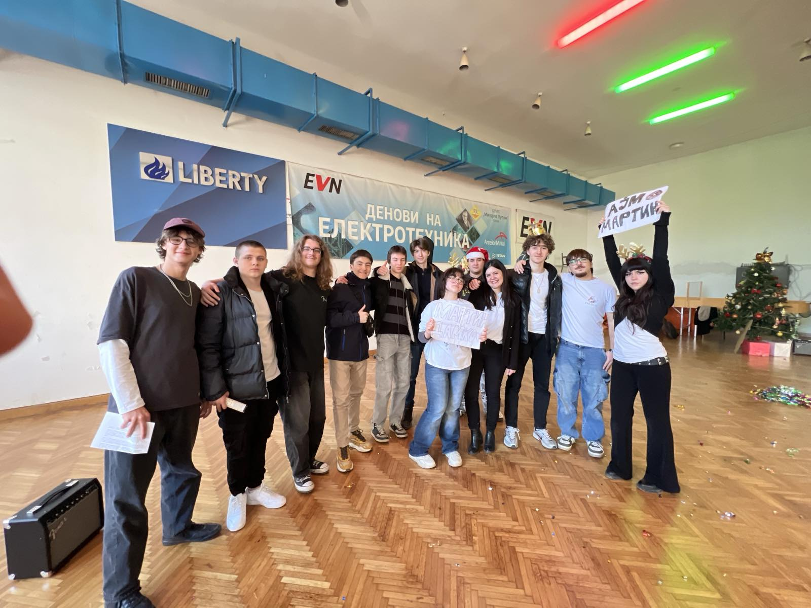
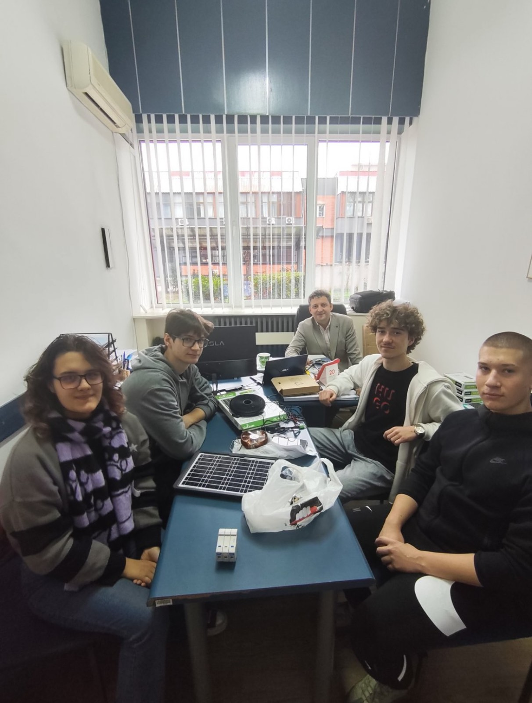
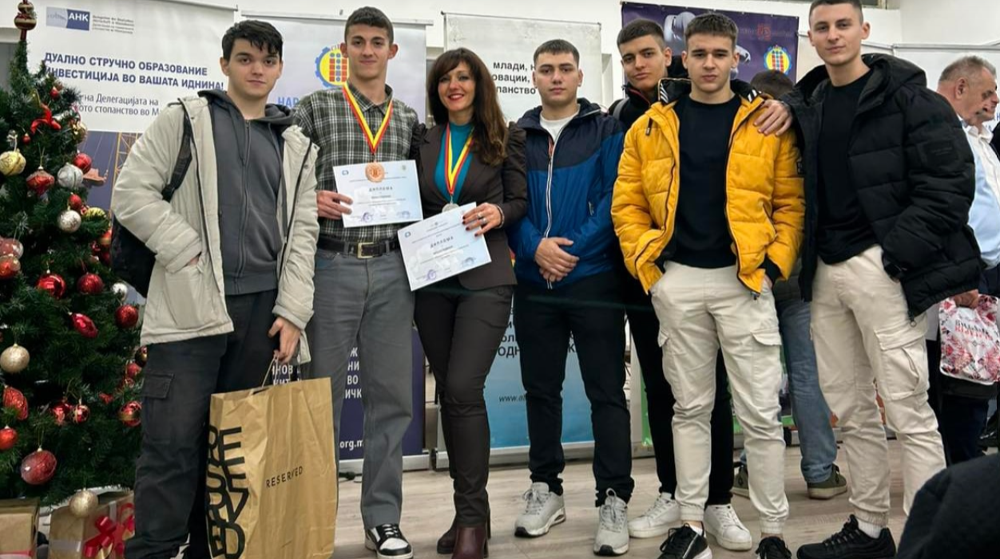
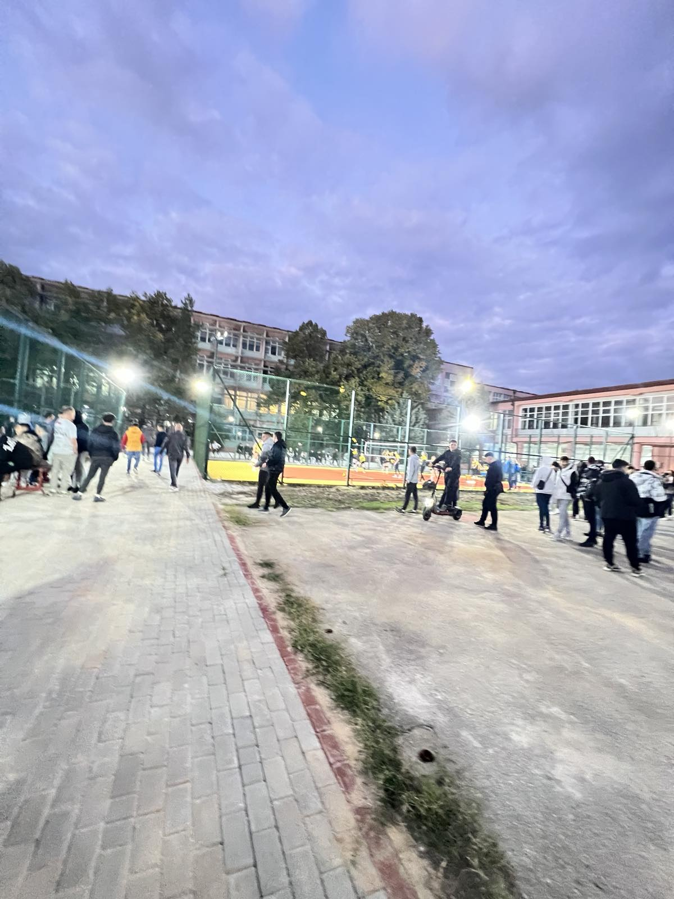

Новина...
Секој напредок и новина ја споделуваме тука...


Нашите ученици од денес ќе можат да учат практични вежби на новите две професионални тренинг табли наменети ...
Прочитај повеќе »



Со организација од професорот Јосипа Наумовска,денеска се одржа културно уметнички настан во нашето...
Прочитај повеќе »




Денес ви претставуваме уште еден новитет , а тоа е летниот амфитеатар кој ќе служи за интер...
Прочитај повеќе »


Неколку годишната напорна работа и посветеност како училиште за унапредување на стручното образование и електротехничката струка денес ја крун ...
Прочитај повеќе »


Прекрасни деца прекрасна екскурзија Прага - Дрез...
Прочитај повеќе »